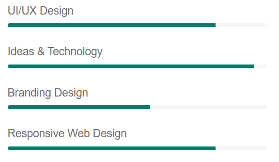

About Me

My Biography
An Undergrad UI Designer & Web Developer Based in Ethiopia
Greetings! I'm Hamdi Mohammed, a fervent student, immersed in the worlds of UI design and web development. Currently pursuing my Software Engineering degree at Addis Ababa University, my journey is defined by a commitment to fuse creativity and technology into impactful digital experiences. My passion ignited during early academic years, and through comprehensive coursework, I've cultivated skills spanning both the aesthetic and technical dimensions of UI design and web development. A believer in the transformative power of design, I am dedicated to crafting interfaces that not only captivate visually but also deliver seamless, user-centric interactions.
In the dynamic landscape of design, I draw inspiration from diverse sources, translating it into visually stunning and functionally robust interfaces. On the development front, my focus lies in the creation of clean and efficient code, translating design concepts into functional and responsive websites. My attention to detail ensures that every pixel serves a purpose, aligning with the overarching vision of a project. This meticulous approach results in digital experiences that seamlessly merge form and function, fostering a sense of connection and usability.
Beyond the academic realm, I actively seek and thrive in opportunities to apply my skills to real-world projects. This hands-on experience has not only expanded my technical proficiency but also cultivated a profound appreciation for collaboration and innovative problem-solving. Engaging in diverse projects has equipped me with the ability to think critically and push the boundaries of my capabilities, contributing to a robust skill set that I bring to every endeavor.
In the ever-evolving tech landscape, my commitment to staying curious and adaptable defines my approach. Each project becomes an opportunity not just to showcase my current skill set but also to embrace continuous learning. Whether it's mastering a new framework or experimenting with design trends, I thrive on the excitement of pushing my own boundaries and evolving alongside the digital frontier.
My design philosophy is not just about creating visually appealing interfaces but also about fostering a sense of connection. I believe that every click, scroll, or interaction should feel intuitive and purposeful. User feedback becomes a valuable compass, guiding refinements and improvements. The iterative nature of design allows me to enhance user experiences progressively, ensuring that each project is a step forward in the pursuit of excellence.
Collaboration sits at the core of my professional ethos. I value the diversity of perspectives that collaboration brings, whether it's with fellow designers, developers, or clients. Through effective communication and teamwork, I've witnessed the transformative power of collective creativity. Collaborative efforts not only elevate the quality of the end product but also contribute to a rich and rewarding professional journey.
As I navigate through this dynamic intersection of design and development, I invite you to explore the portfolio that encapsulates my creative endeavors. Each project is a chapter in a story of growth, innovation, and a relentless pursuit of excellence. Your presence on this journey is not just appreciated; it's an integral part of the narrative that propels me forward.
My Skills
My Featured Skills
I specialize in creating visually stunning and user-friendly websites, seamlessly blending UI design with web development. My skills encompass responsive design, front-end technologies, and a keen eye for detail. Let's elevate your digital presence with innovation and expertise.

Web Development
I meticulously craft dynamic and responsive websites. Leveraging a proficiency in HTML, CSS, and JavaScript, I bring ideas to life with clean code and seamless functionality. Every project reflects my commitment to precision and user-centric design.
Research Analysis
Expert in research analysis, I delve deep into user behavior and market trends to inform strategic decisions. By translating insights into actionable solutions, I ensure that each web project is tailored to meet both user expectations and business objectives.
Responsive Design
Specializing in responsive design, I create websites that adapt seamlessly across devices. Utilizing CSS media queries and flexible grids, my designs ensure a consistent and optimal user experience, irrespective of the device, screen size, or orientation.
Design Trends
At the forefront of design trends, I infuse projects with the latest visual aesthetics and user experience principles. From innovative layouts to contemporary elements, I bring a keen understanding of design trends to create modern, engaging, and impactful digital experiences.
Resume / CV
Education and Experience
Currently pursuing a Bachelor's degree in Software Engineering at Addis Ababa University, I am a dedicated third-year student with a commitment to academic excellence. My coursework delves into cutting-edge technologies, laying a robust foundation for my future as a proficient and innovative software engineer.
| Category | Description | Details |
|---|---|---|
| Education | Degree | Bachelor of Software Engineering |
| University | Addis Ababa University | |
| Status | 3rd Year (Expected Graduation: 2025) | |
| Experience | Position | Software Development Intern |
| Company | InnovateTech Solutions | |
| Duration | May 2022 - August 2023 | |
| Responsibilities | Collaborated on cutting-edge projects, contributing to the development of innovative solutions in a dynamic team environment. |
In conclusion, my academic trajectory at Addis Ababa University in Software Engineering is complemented by a transformative Software Development Internship at InnovateTech Solutions. As a dedicated third-year student, I have cultivated a solid foundation in theoretical concepts, enriched by hands-on experience in a dynamic professional setting. At InnovateTech Solutions, I actively contributed to cutting-edge projects, refining my skills in collaborative problem-solving and fostering a passion for innovation. This fusion of academic rigor and practical insights positions me as a versatile and forward-thinking individual, poised to make impactful contributions in the dynamic realm of software engineering.
Voluntary Activities
Community Volunteering
Dedicated to community service, I actively engage in local volunteering initiatives. By contributing time and skills, I foster positive change and social cohesion, enriching lives and creating a sense of community unity.

Mentorship Programs
As a mentor, I guide aspiring individuals in their professional and personal development journeys. Sharing insights, offering advice, and providing support, I empower mentees to navigate challenges and achieve their goals.

Envirnonmental Advocacy
Passionate about environmental sustainability, I participate in advocacy programs. Through awareness campaigns and hands-on initiatives, I strive to make a positive impact, promoting eco-friendly practices and fostering a sense of responsibility toward our planet.
Hobbies
Photography
Capturing moments through the lens is my passion. Photography allows me to explore creativity, play with perspectives, and immortalize memories. From landscapes to candid portraits, each shot tells a unique story.

Gardening
In the tranquility of my garden, I find solace. Nurturing plants, witnessing growth, and creating a harmonious green space bring joy and fulfillment. Gardening is not just a hobby; it's a therapeutic journey.

Cooking and Culinary Exploration
Culinary experimentation is my creative outlet. From mastering diverse cuisines to creating my own recipes, cooking is a delightful journey. It's a blend of flavors, an art form that tantalizes taste buds and sparks joy.
Achievements
Professional Milestone
Achieving the 'Project of the Year' award marked a pivotal moment in my professional journey. This milestone not only showcased my expertise but also demonstrated dedication and resilience in overcoming challenges. It's a testament to my commitment to excellence in web development.

Academic Excellence
Attaining a Master's degree in Computer Science reflects my commitment to academic excellence. The rigorous pursuit of knowledge and the ability to apply it in real-world scenarios have been pivotal in shaping my skills and perspectives.
Leadership Recognition
Being recognized as the 'Team Leader of the Quarter' is a testament to my effective leadership style. Steering teams toward success, fostering collaboration, and achieving measurable outcomes are key components of my leadership journey, illustrating my ability to inspire and drive results.
Take A Tour Of My Office
Welcome to my work haven! The office is a symphony of creativity, adorned with minimalist aesthetics and vibrant touches. The spacious desk bathed in natural light is my command center, surrounded by tech essentials. Here, ideas come to life, fueled by inspiration and the hum of productivity.
Reviews
My Clients and Testimonials

William James
Photographer
"Working with Hamdi was a game-changer! His design expertise and seamless collaboration brought our vision to life. Professional, innovative, and a true pleasure to work with."
Rating: ⭐⭐⭐⭐ (4/5)

David Rodriguez
Business Owner
"Hamdi exceeded expectations! His web development skills transformed our online presence. Responsive, detail-oriented, and always meeting deadlines. A top-notch professional that I highly recommend."
Rating: ⭐⭐⭐⭐⭐ (5/5)

Emily Parker
Marketing Specialist
"Exceptional UI design by Hamdi! His creativity and attention to detail made our project stand out. Timely delivery and a collaborative spirit. A reliable and skilled professional!"
Rating: ⭐⭐⭐⭐ (4/5)